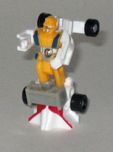

Difficulty of Transformation : Very Easy
Color Scheme : Blue, light gray, black, and some silver and gold
Individual Rating : 3.7
Components include
: Autobot Groove,
First Aid, Hot Spot, Prowl, Red Alert, and Streetwise (sold seperately)
Individual prices
: $4 (U.S.)
Allegiances
: Autobot
Size
: Micromasters (i.e., slightly
smaller than Minicons)
Overall Rating
: 4.6
(NOTE: These toys aren't really new molds
but basically re-named, re-packaged reissues of a formerly Japanese-exclusive
Micromaster set-- Sixturbo-- from the early 1990's. Even though these toys
are sold individually, I'm reviewing them on one page for simplicity's
sake.)
 Autobot
Groove
Autobot
Groove
Difficulty of Transformation
: Very
Easy
Color Scheme
: Blue, light gray,
black, and some silver and gold
Individual Rating
: 3.7
Like his G1 Defensor
version, Groove is, again, a police-styled motorcycle. It's got the wide
windshield in the front (although I think it's a bit TOO wide), and the
raised seat in the back. It looks pretty nice, especially for so small
of a vehicle. Groove also has more mold and paint detailing than you'd
think would be on such a small figure, with little headlights and seat
grooves and the like.
In robot mode, though,
like most of the other Micromasters, Groove is pretty poor. His arms don't
reach past his chest at all, and I don't know if I'd consider them so much
arms as stubby pieces of moving plastic. His legs are also just one bit
chunk of plastic, made up of the front of the motorcycle. His head is also
entirely unpainted, and the wheel coming out of his chest looks pretty
odd, too. Like all of his fellow Protectobots, he can move at his shoulders,
his hips, and his knees (although since the latter two are just part of
one big piece, they can only move together).
Autobot Groove comes
with Defensor's upper legs and waist piece.
Autobot Groove is a
nice (albeit tiiiny) toy in vehicle mode, but his robot mode looks pretty
dorky. I definitely keep this guy in his alt mode almost all the time.
Considering how little he is, even for a Micromaster, asking $4 for him
is pretty steep, too.
 First
Aid
First
Aid
Difficulty of Transformation
: Very
Easy
Color Scheme
: White, black, light
gray, and some red, silver, and orange-yellow
Individual Rating
: 4.6
Again, like his G1 Defensor
version, First Aid is an ambulance. He's pretty much your run-of-the-mill
ambulance, with no real attractive features, but no real downsides or robot
extras, either. He's got enough paint detailing, although he could use
some more mold detailing on some of his (relatively) wide, flat parts.
There's not much else to say about this mode, really.
First Aid's robot mode
is certainly... original, although I'm not sure if it's in a good way.
It's very hard to actually SEE his robot mode, since it's covered by the
back two-thirds of his ambulance mode. You really have to look in there
to see it. He has some nice guns popping out from above his head, though,
making him one of the few Micromasters to actually pack some firepower.
His chest is pretty well-detailed, as well. His feet really look odd, as
they're connected to a piece behind him that is necessary to give First
Aid any stability. However, this piece also prevents any leg movement whatsoever
when it's connected to First Aid, which is a pretty big oversight.
First Aid comes with
one of Defensor's foot pieces.
First Aid is a pretty
good, albeit kinda boring, toy in vehicle mode. Although his robot mode
is original in its design, its structure gives him almost no leg movement,
and it's pretty hard to see his head from most vantage points. Still he's
about middle-of-the-road as far as these Protectobots go.
 Hot
Spot
Hot
Spot
Difficulty of Transformation
: Very
Easy
Color Scheme
: Red, yellow, black,
and some silver, light gray, and gold
Individual Rating
: 5.3
Instead of being a fire
truck like his G1 counterpart, Universe Hot Spot is a sportscar. I'm guessing
he's named "Hot Spot" because he's a yellow sportscar (thus resembling
Hot Shot
). Anyways, this mode is pretty much
a slightly-smaller version of
Armada Sparkplug
,
both in its design and coloration. The yellow is a pretty stomachable color,
though, and not bright at all. It hasn't got any paint apps for the headlights
or anything- only black on the windows- but I suppose at this scale that
is a bit hard to do on these skinny bumpers. The mold detailing is surprisingly
good for such a small toy, though- you can see the outline of the headlights,
crests, and all that other good stuff.
In robot mode, Hot Spot
is probably the best out of the individual Defensor components, although
admittedly that's not saying much. His legs are still one big mass, and
thus look kinda doofy. Overall, though, he's still rather good for a Micromaster-
until you see the front of the car hanging low off his back. If they'd
just kept it up behind his head, it would've been out of the way, but now
it hangs down almost to his feet and gets in the way of leg movement. It's
really distracting. Hot Spot's mold and paint detailing is pretty good,
though, especially on the chest. His head definitely has a "Japanese robot"
look to it, so it's easy to tell the true origins of this mold.
Hot Spot comes with
Defensor's rifle.
Hot Spot is the best
of the Protectobots, with a solid vehicle mode and an okay robot mode.
When you take into account his small size, his big blocky legs and car
panel hanging off his back are his only real drawbacks.
 Prowl
Prowl
Difficulty of Transformation
: Very
Easy
Color Scheme
: White, black, blue,
silver, and some red
Individual Rating
: 5.1
Although this has got
to be the millionth Transformer named Prowl, at least this time the name
is suitable. Not only is he a police car, but his paint decoration matches
G1 Prowl's
very closely, right down to the black
notch in the center of the hood. Overall, his vehicle mode is prety nice,
with a good amount of paint detailing and fair mold detailing.
Considering that his
transformation is exactly the same as Hot Spot's, my comments on Prowl's
robot mode also remain pretty much identical. His feet are one big block,
and the front part of his vehicle mode hangs down below his knees, but
he's still got one of the best designs of the Protectobots. I really don't
like the design of his head and chest, though- he looks like some kiddy,
big-chined policeman. I mean, I can understand a big of a nod, but he just
looks so much like a doofy crossing guard that it's hard to take the toy
seriously.
Prowl comes with Defensor's
head and chest piece.
Prowl shares the best
Protectobot design with Hot Spot, and enjoys a bit more paint detailing
than the latter. But the robot head and chest design is pretty goofy-looking,
and definitely a little over-the-top.
 Red
Alert
Red
Alert
Difficulty of Transformation
: Very
Easy
Color Scheme
: Red, white, and some
light gray, silver, black, and dark blue
Individual Rating
: 3.0
Instead of Hot Spot being
the Protectobot fire truck, that honor has now gone to Red Alert (who actually
wasn't one of the original Protectobots, along with Prowl, but hey, there's
one more component in Universe Defensor than in G1 Defensor, and Hasbro
obviously lost the copyright to Blades, sooo.....). Red Alert's a rather
chibi fire truck, though, as he's far too wide when compared to his length.
His ladder is also laughingly small, although at least it can rotate around
instead of just being stuck in one place. Red Alert's got some very nice
mold and paint detailing for such a small toy, though, and his color scheme's
definitely appropriate.
Red Alert's robot mode
is just terrible. It's hard to find anything good about it. The arms are
waaay too wide, the legs have to actually bend slightly backwards to in
order for his square, oddly-jointed to hold him up, and the front third
of his fire truck mode hangs off his back rather unceremoniously. His head,
while detailed, looks a little goofy since the chin "gas mask" is too large
when compared to the rest of the head. Otherwise, it looks fine- rather
like a fireman with his fire-protection mask on.
Red Alert comes with
one of Defensor's foot pieces.
Red Alert is definitely
the worst of the Universe Protectobots. His vehicle mode is only so-so
because of its chibi-ish proportions, and his robot mode is hideous. This
toy definitely could have been designed better.
 Streetwise
Streetwise

Difficulty of Transformation
: Very
Easy
Color Scheme
: White, yellow, and
some black, light gray, silver, dark blue, and dark red
Individual Rating
: 4.9
Although G1 Streetwise
was a police car, Prowl has that honor now, so Universe Streetwise is a
indy race car. Like the other Protectobots, Streetwise has a pretty nice,
extra-free robot mode, with a fair amount of decorative paint detailing.
The red designs really help to break up the rest of the mode, which is
almost entirely white. He seriously needs some mold detailing, though-
he's almost devoid of it entirely in this mode.
I WOULD be okay with
Streetwise's robot mode is the front third of the vehicle mode actually
folded down behind him rather than just sticking out at a right angle.
Not only does it detract severely from the look, but it also puts him off-balance,
making it almost impossible for him to stand up straight. His main body
and legs look pretty nice, although I think the seat belt straps over his
chest are going a little overboard. His legs, again, are just one solid
piece, but they look a lot closer to legs than most of the other Protectobots',
I can tell you that.
Streetwise comes with
one of Defensor's fists and his missile pack.
Streetwise would have
been the best Protectobot if it wasn't for the way his race car front hangs
off his back in robot mode. As such, he's about middle-of-the-road as far
as this team goes.
 Defensor
Defensor
Difficulty of Transformation
: Medium
Individual Rating
: 5.8
When all six Micromasters
are combined (and you insert the extra parts), the gestalt Defensor is
made! He's really not all that impressive, though. Besides his head, his
only other point of movement is at the shoulders, but the guns protruding
out of the sides of his chest prevent any but the slightest forward movement
at that point. So you're basically stuck with a statue. A statute whose
hand pieces fall off if you so much as look at them wrong. And his legs
seem to almost bend backwards, due to the way the upper legs connect to
Red Alert and First Aid. Another oddity is that Autobot Groove doesn't
contribute anything to the gestalt- you just plop him on the back of the
chest piece, where he doesn't look like anything.
One thing that is creative
about Defensor, though, is that when all the extra gestalt pieces aren't
in use, they can combine into a jet fighter. It's a fairly servicable jet
fighter, too, with generally good proportions, although the main body is
a little large. A Micromaster can also fit in the seat in the center of
the jet, although there is a hole underneath part of that seat, so he can
easily fall right through if you pick up the jet. It's still a pretty nice
way of using all those extra parts, though.
Although the individual vehicle modes are nice, overall, Universe Defensor isn't worth buying unless you're a huge fan of either little Transformers or the old-style gestalts. When combined, he's just a little larger than a deluxe- not a big drawing point for a 'bot that costs about $25 U.S. The gestalt is also pretty much a brick, and the individual Micromaster robot modes range from a little bad to horrendous. I like that Hasbro's bringing in never-before-seen Japanese molds to the U.S. shores, but this one is really showing its age.
No Stats
Review by Beastbot